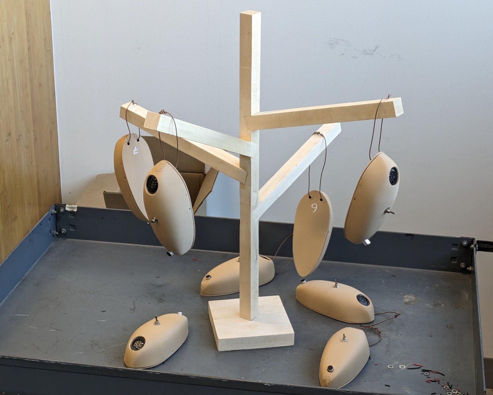
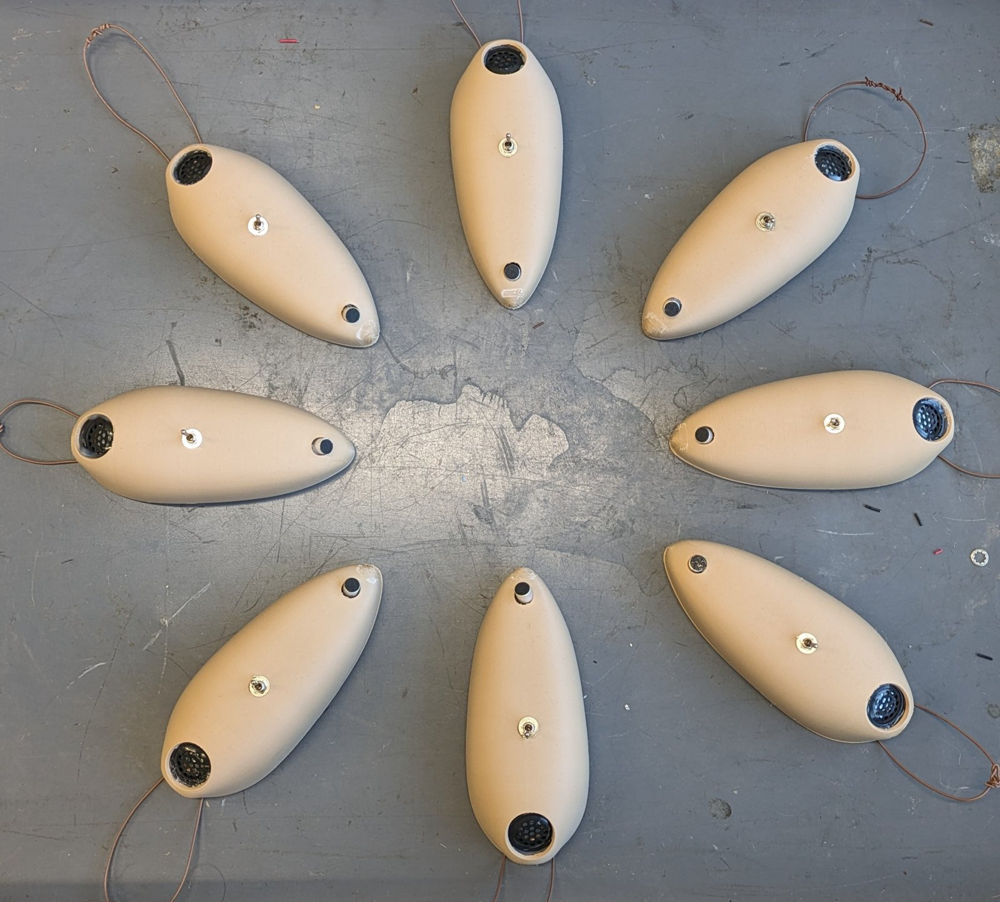
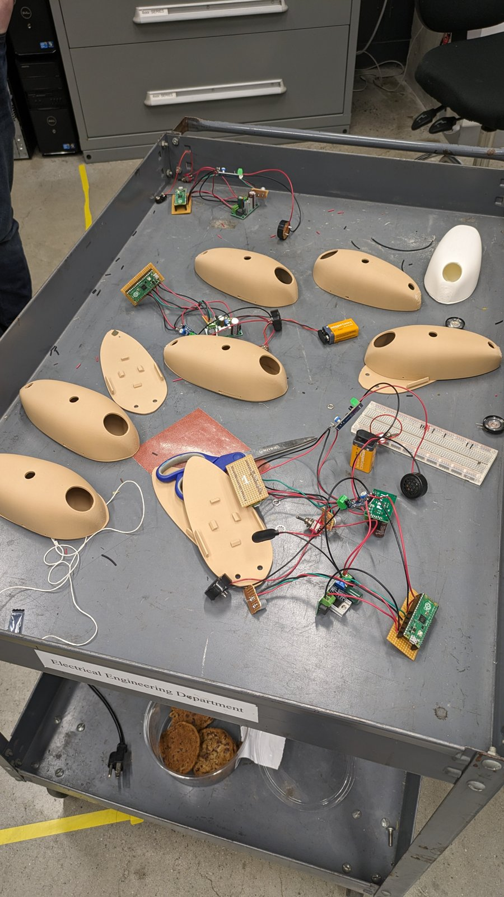
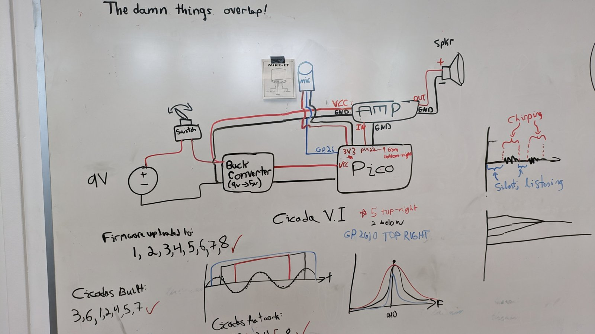
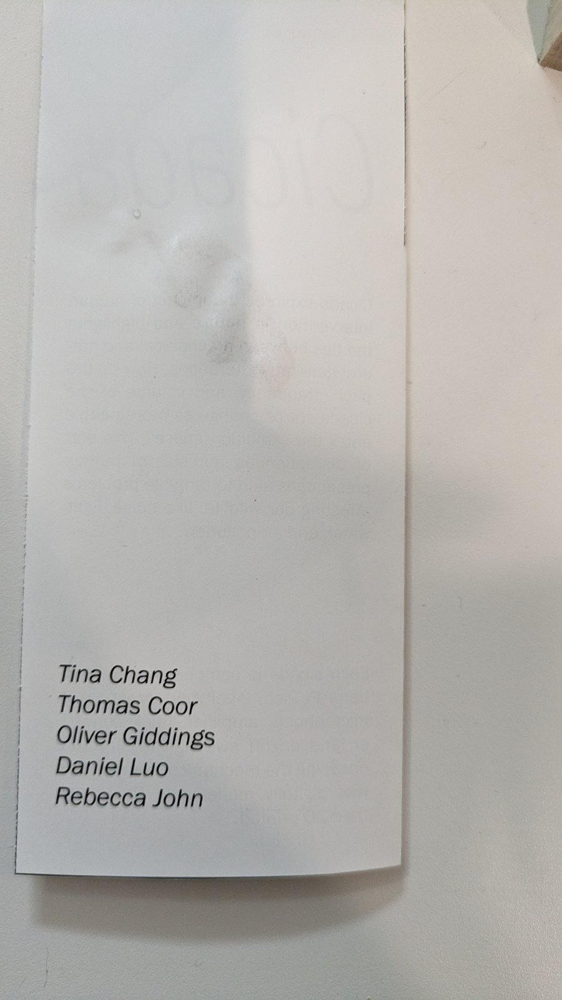
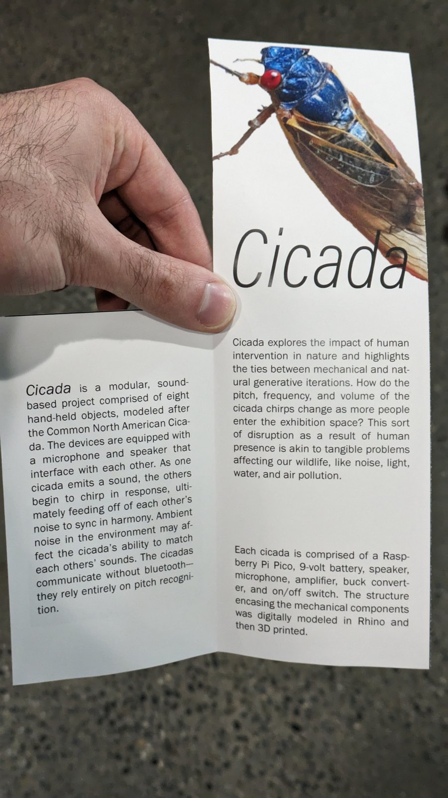

May 14, 2024
My final project for Cooper Union's Generative Machine Learning for Architecture course was Cicadas, a ridiculous project where little robotic bugs chirp randomly, and slowly try to chirp at the same pitch. It didn't use any ML, but it certainly generated a lot of fun sounds every time we turned them on.

Each cicada has a speaker and a microphone. On startup, the cicada randomly chooses a tone between 300 and 1kHz to play through its speakers as a 1-second chirp. At the same time, the microphone is recording its surroundings and performing an FFT of what it captures. The 2nd-highest magnitude signal it measures (the 1st being its own chirp) is stored, and its next chirp is played at a frequency roughly 20% in the direction of what it just heard. This means thats chirps will slowly match another chirp being played near it. If two cicadas are near enough to hear each other, then after just a handful of chirps they will be chirping the same note.

With our platoon of eight critters, after fewer than 10 seconds a clatter of the worst sounds ever melts into one single worst sound ever (I'm writing a separate blog about speaker design for makers). If a fire alarm was sounding while the cicadas were on, that fixed sound would likely dominate and they would all drift its way.

As monumental, Earth-shattering, and nation-defining as this project is, it is still the most bare implementation of the bare concept and there is plenty of room for further tomfoolery.
Synchronized Chirps
The Smokies Synchronous Firefly, Photinus Carolinus, is a species of North American Firefly that synchronize their blinks with one another. The pattern is a call and response between the males and females of the species, and the blink pattern differs with sex and ambient temperature. Because our Cicadas are asexual [citation needed] a simple chirp time coordination would be sufficient for them, and not all that hard to do.


